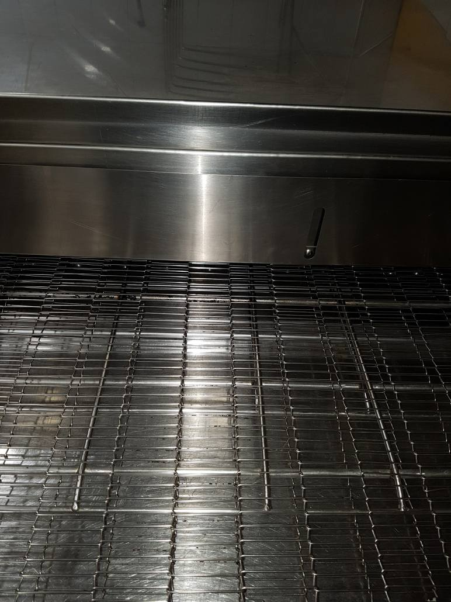
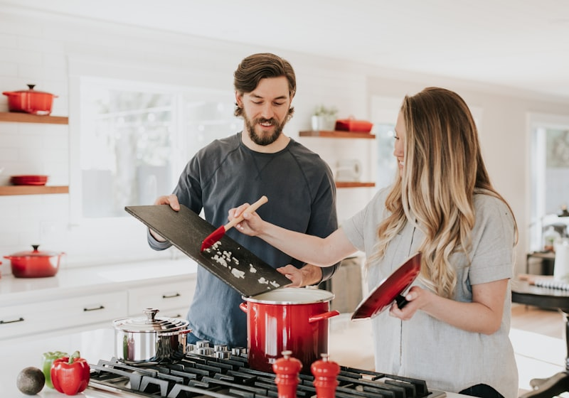
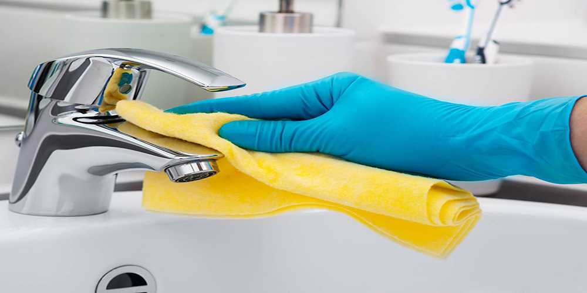
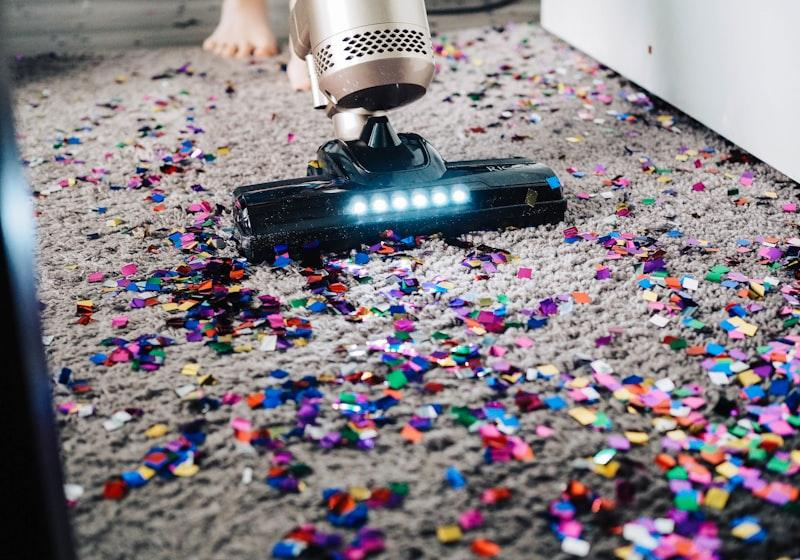
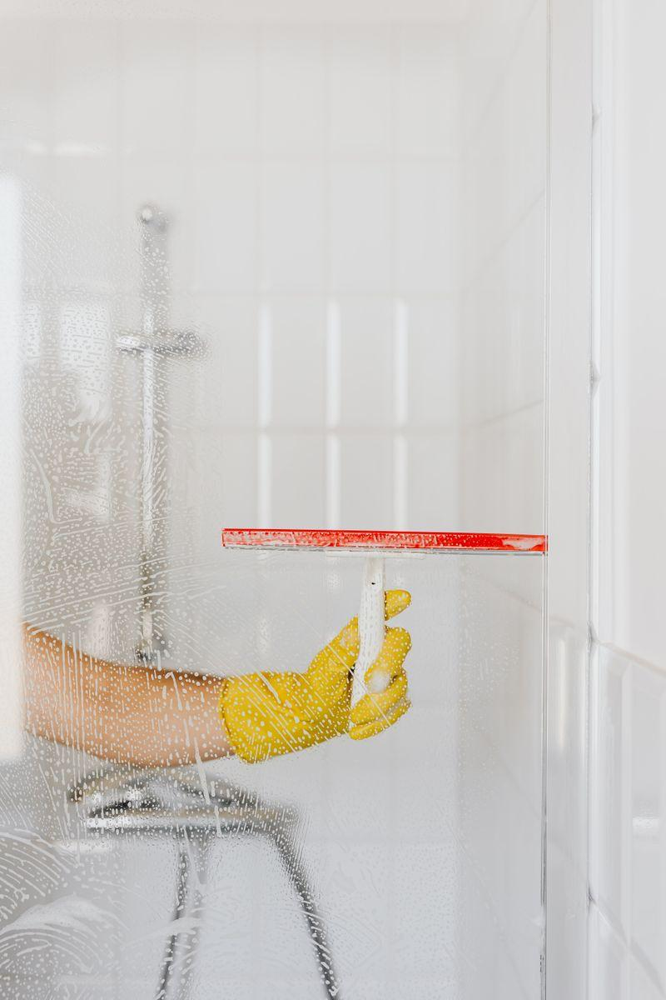

Chemical deep cleaning is the use of industry-approved chemicals to eliminate the bacteria that daily cleaning and wiping leave behind. Here's everything we do — and how we do it.

Commercial kitchen hygiene is controlled by stringent food safety regulations, and even the best kitchen staff can't reach hidden corners and heavy equipment. We recommend a certified deep clean at least once a year — or every six months for high-production kitchens.
How it works: we survey your site free of charge and quote across three areas — structure, canopies and equipment. On completion, the team leader walks the job through with you, arranges sign-off, and we issue a hygiene certificate for your insurance requirements at no extra charge.
Book a Kitchen Deep CleanStudies show a clean school environment delivers a 3–5% improvement in learning ability and test scores. We clean where it counts most — cafeterias, classrooms, washrooms, abattoirs and butcheries — using industrial-grade chemicals that eliminate the bacteria daily cleaning leaves behind.
We schedule cleans during holidays, after hours or between shifts so operations are never disrupted, and offer regular contracts to prevent contamination year-round.
Book a Facility Deep Clean
Cleanfellas is certified by both SANHA and the National Independent Halal Trust (NIHT). Halaal encompasses all aspects of food hygiene and quality — facilities previously used for non-Halaal food can be certified, provided proper cleaning, wash-down and sterilising procedures according to Shari'ah requirements have been observed. That's exactly what we deliver.
With the global Halaal market growing rapidly, certification opens real commercial opportunity. Our experts make the journey through scrutiny and certification a smooth one.
Enquire About Halaal Cleans
We restore washrooms to a certifiable standard of hygiene using industrial-grade chemicals and equipment, covering every surface from floor to ceiling.
Our dry carpet cleaning uses eco-friendly consumables, so carpets are back in use within an hour of cleaning. Products are pet friendly and don't promote sinus congestion from dust build-up.
We're also renowned for our ultrasonic heat baths, treatments and cleaning — a speciality since our earliest days serving major hygiene companies, ideal for restoring equipment and parts that conventional cleaning can't touch.


A clean washroom is only as good as the equipment in it. We supply, install and service a full range of hygiene dispensers and consumables — keeping your facilities stocked, functional and compliant at all times. A free site survey will determine the best setup for your space.
Suitable for offices, restaurants, schools, healthcare facilities, retail and any commercial premises requiring consistent washroom hygiene standards.
Enquire About Equipment & ServicingMoving into a new home, finishing a construction project, or handing over to a new tenant? We use industrial-strength chemicals and professional-grade equipment to bring any residential property to a certified-clean standard. Get in touch for a free site visit and we'll assess exactly what the job requires.
Mold found during the clean can be treated as a separate add-on service. We identify affected areas, apply anti-fungal treatments to eliminate active mold, and apply a preventative sealant coating to inhibit regrowth — keeping your home healthy and your walls protected.
Tell us about your space and we'll survey it free of charge, then recommend and quote the right deep clean for you.